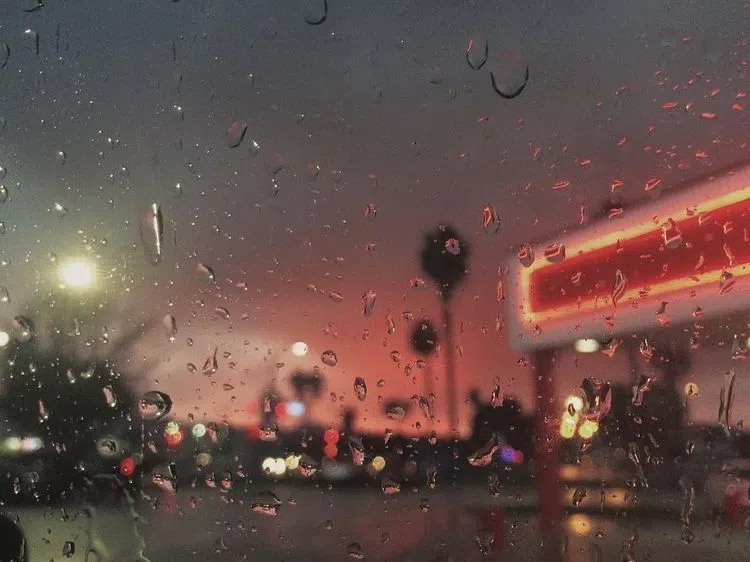

im drawn to the north west. idk if its just merely escapism, or something more. all i know is i have to get out of the south, its killing my soul, and has been for years! im in a sort of limbo right now though, i have to get income before i even think of moving cross-country... it'd be nice, id be surrounded by intellectuals and religiously open-minded people up there! its also just so .... pretty there... someday, i will live there, someday! anyways, a friend came back after a long period of avoidance.. it was a nice surprise and made me happy. my bpd didnt lash out at them this time, which is nice! they also gave me something i needed to hear, that struck my core "you've been learning a lot tbh and ive been impressed by the stuff you've shown me. that passion to learn and try new things, is beautiful". it lets me know i've truly come far in both terms of my mental state, and techological knowledge (we first met at the start of my blog, back in 2021... back when i was using raw php 8, before laravel... before even Go....) itd be nice to be fully healed. they too want to escape the south, and i believe they'd make a great friend, if i can continue to keep my BPD in check & continue healing!
